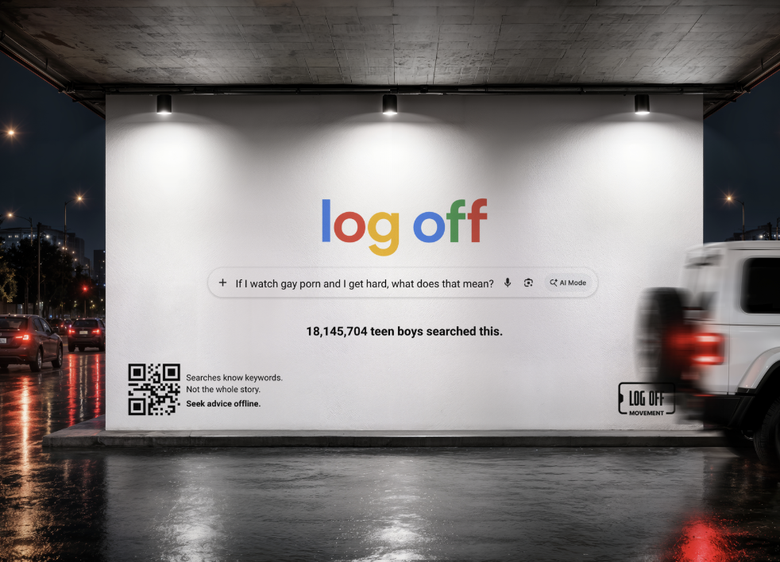
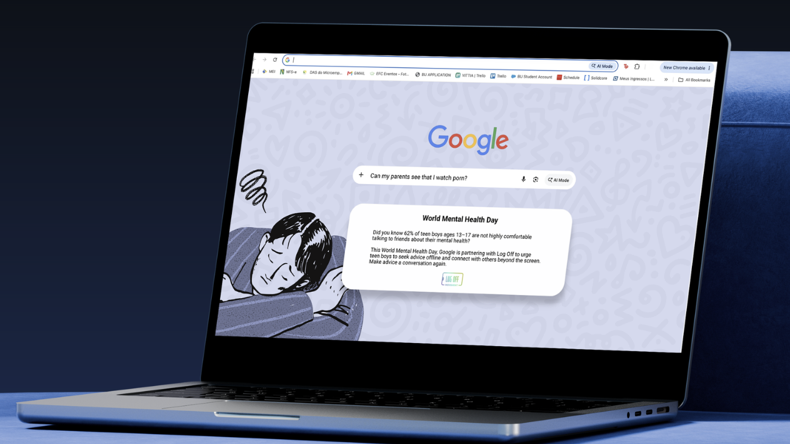

01
In your feed.
Interrupting the scroll. Questioning the advice. Turning a familiar feed into a reason to start a real conversation.
Make advice a conversation again. By exposing questionable advice teenage boys encounter online, we’re encouraging them to think twice about who they’re listening to and start having real conversations.
Take it offlineFrom dating advice, to confidence talk, to what it means to be a man, teen boys are turning to search engines, influencers, and social media for answers. But algorithms and influencers can make harmful advice seem normal, leaving boys unsure of who to trust. But why?
Teen boys turn to online advice because it feels safer to ask a screen rather than someone they know. Little do they know they are not the only ones searching for the same answers.
Our campaign, Unscreened Advice, not only challenges the advice boys find online, but turns their most searched questions into opportunities to foster real conversations.
Meet a better kind of adviceSome advice needs
a second opinion.
Our goal is to show teen boys they are not alone and not all advice online can be trusted. We want to remind them that real conversations with family, friends, mentors, and trusted people can offer something that a screen can’t.
If advice feels off, it’s okay to question it.
A friend. A parent. A coach. Someone you trust.
You don’t need the perfect words. Just a first one.
“Hey, can I talk to you about something?”
You’ve got questions. And you deserve more than whatever advice comes up first. Through our partnership with the Boys and Girls Club, we’re helping you find real people, real conversations, and real support beyond the screen.
Find your peopleHere’s how we’ve been sparking conversations
and getting people offline.
Interrupting the scroll. Questioning the advice. Turning a familiar feed into a reason to start a real conversation.

Taking the conversation beyond the screen. Showing up in everyday places with a reminder to seek advice offline.

A reminder that support goes beyond a search bar. Real people and real conversations can help us feel more connected.
Everything we do has one goal.
get people offline and talking face to face.